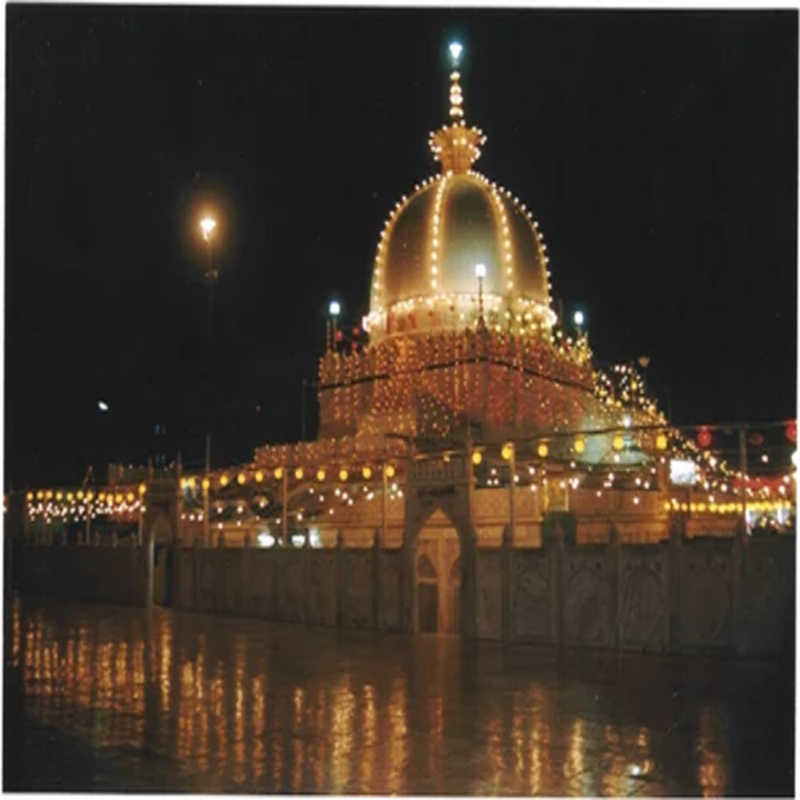

Ranthambore National Park is one of the biggest and most renowned national parks in Northern India. The park is located in the Sawai Madhopur district of southeastern Rajasthan, which is about 130 km from Jaipur.
Once considered as one of the famous and former hunting grounds of the Maharajas of Jaipur, today the Ranthambore National Park terrain is a major wildlife tourist attraction that has drawn the attention of many wildlife photographers and lovers.
Amber Palace
One of the top tourist attractions of Jaipur, the huge Amer Palace Fort sits atop a small hill, and is located at a distance about 11 km from the main city. The magnificent Amer Fort is an extensive palace complex that has been built with pale yellow and pink sandstone, and with white marble.
Mehrangarh Fort
Mehrangarh the Fort of Jodhpur crowns a rocky hill that rises 400 feet above the surrounding plain, and appears both to command and to meld with the landscape. One of the largest forts in Rajasthan, it contains some of the finest palaces and preserves in its museum many priceless relics of Indian courtly life.
For over five centuries Mehrangarh has been the headquarters of the senior branch of Rajput clan known as the Rathores. According to their bards, the ruling dynasty of this clan had at an earlier period controlled Kanauj (in what is known as Uttar Pradesh).
Hawa Mahal
The Hawa Mahal in Jaipur is considered as one of the most iconic attractions of the city. The five-storey building looks like a honeycomb of a beehive and it is always windy inside.This amazing ventilation that the palace enjoys is the reason why it was named as the Hawa Mahal, which literally translates into the “Palace of the Winds”.The main purpose behind the construction of this palace was to allow the ladies of the royal family without being seen themselves.
Shiv-Niwas-palace
ALocated to the south side of and part of the City Palace complex, work on this building was begun by Maharana Sajjan Shambhu Singh (1874 to 1884) and finished by his successor Maharana Fateh Singh at the beginning of the 20th century as a royal guesthouse.
During its time as a guesthouse it hosted a number of royal gatherings and VIP visits from all over the world, including George V of the United Kingdom in 1905, and Edward the Prince of Wales.
City Palace
Located deep within the walled city, the City Palace Complex was conceived and built by Maharaja Sawai Jai Singh II, the founder of Jaipur. A beautiful fusion of Mughal and Rajput architecture, the palace is still home to the last ruling royal family which lives in a private section of the palace.
Jaisalmer
This 'Golden City' is located close to the Pakistan border and in close proximity to the Thar Desert. The city's most prominent landmark is the Jaisalmer Fort, also called Sonar Qila (Golden Fort). Unlike most other forts in India, Jaisalmer Fort is not just a tourist attraction..
Mount Abu
Serving as a source of comfort from the sultry dessert climate of Rajasthan, Mount Abu, the state’s only hill station stands at a height of 1722 metres above sea level, and is embraced by lush green hills of the Aravalli range. Studded with a colourful mix of rustic abodes of tribal communities and posh houses inclusive of British style bungalows and royal holiday lodges Covered in vast stretches of green forests, serene lakes, and effusive waterfalls, this region allows you to revel amidst panoramic vistas, all year round.

Ajmer Dargah
South west of Jaipur, Ajmer is an oasis wrapped in the green hills. The city was founded by Raja Ajay Pal Chauhan in the 7th Century A.D. and continued to be a major centre of the Chauhan power till 1193 A.D. When Prithviraj Chauhan lost it to Mohammed Gaure. Since then, Ajmer became home to many dynasties
ABOUT THE STATE
Rajasthan is a state located in the northern part of India. It is the largest state in terms of area, covering an area of approximately 342,239 square kilometers, and is bordered by Pakistan to the west, Gujarat to the southwest, Madhya Pradesh to the southeast, Uttar Pradesh to the northeast, and Haryana to the north.
The capital city of Rajasthan is Jaipur, which is also known as the "Pink City" due to the color of the buildings in the old city. Other major cities in Rajasthan include Jodhpur, Udaipur, Bikaner, Ajmer, and Kota.
Rajasthan is known for its rich cultural heritage, which includes its colorful folk music and dance, its magnificent forts and palaces, and its vibrant festivals, such as the Pushkar Fair, the Elephant Festival, and the Desert Festival.
The state is also home to several wildlife sanctuaries and national parks, including the Ranthambore National Park, Sariska Tiger Reserve, Keoladeo National Park, and the Desert National Park.
Rajasthan has a predominantly arid climate, with hot summers and cool winters. The economy of Rajasthan is primarily based on agriculture and tourism, with the state being a major producer of crops such as wheat, maize, and mustard. The state is also known for its handicrafts and textiles, including the famous Bandhani and Leheriya fabrics.
.png)